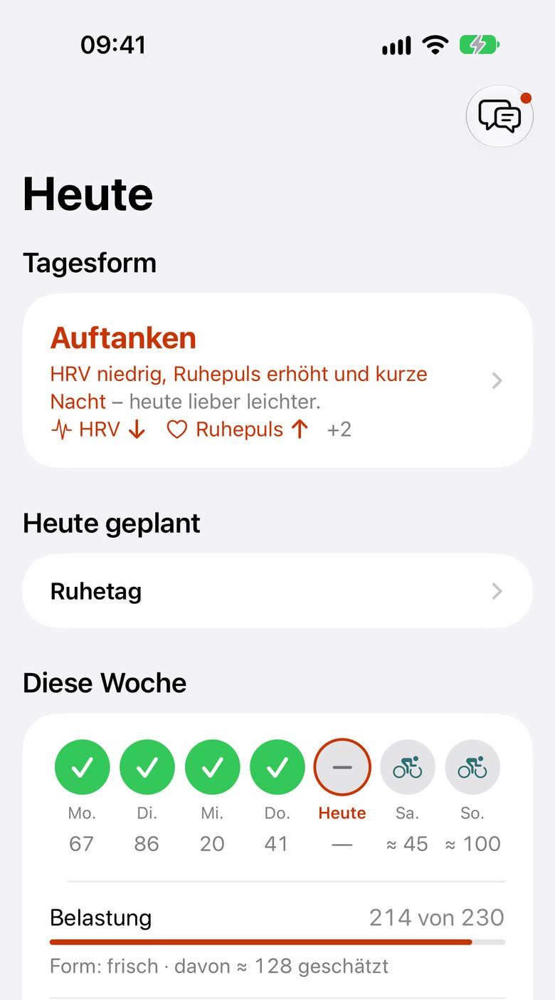
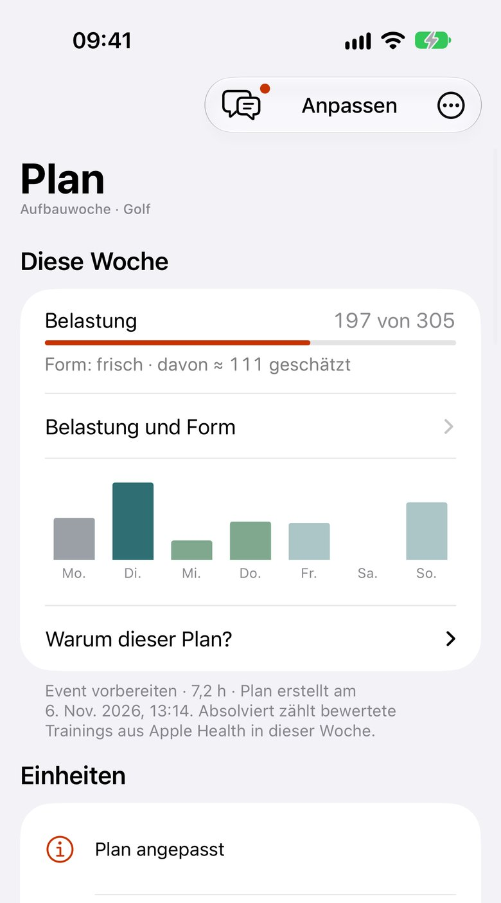
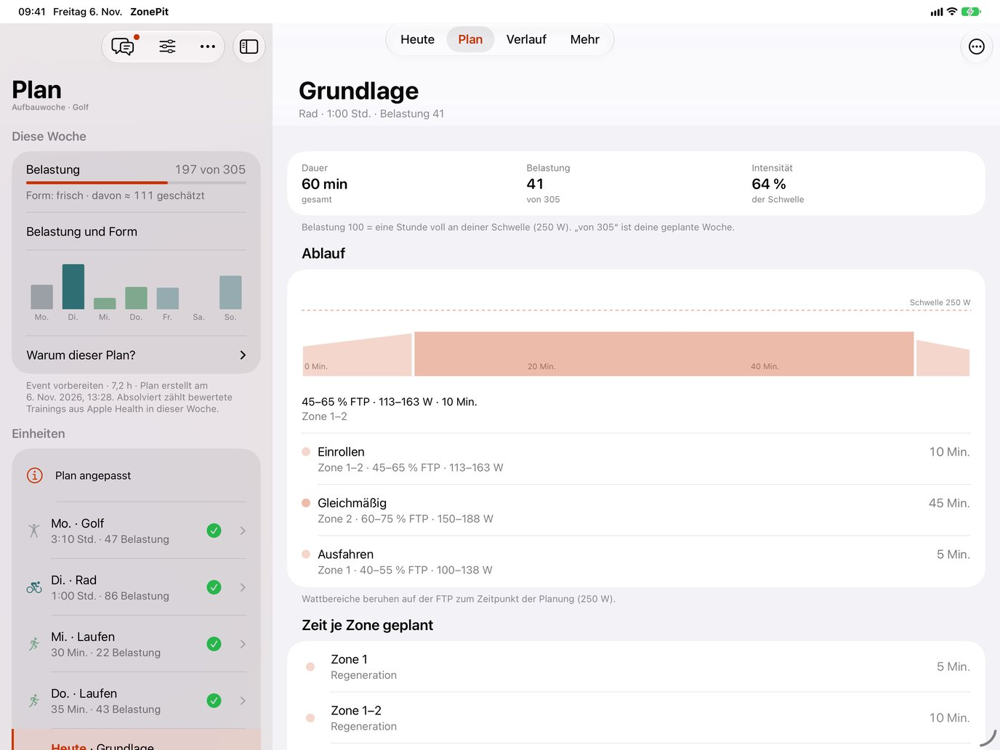
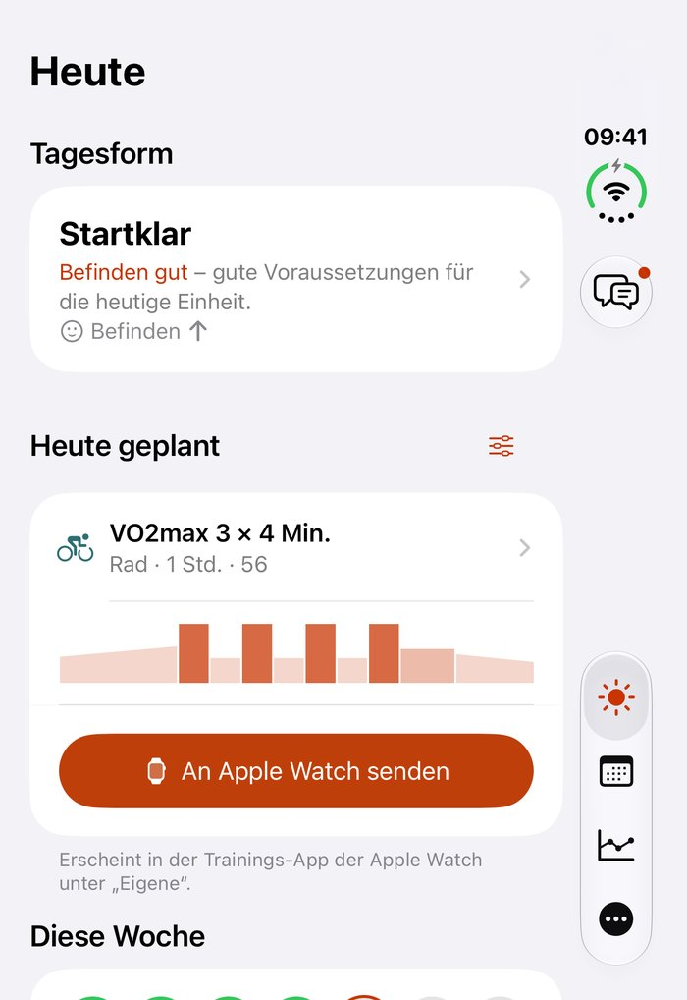
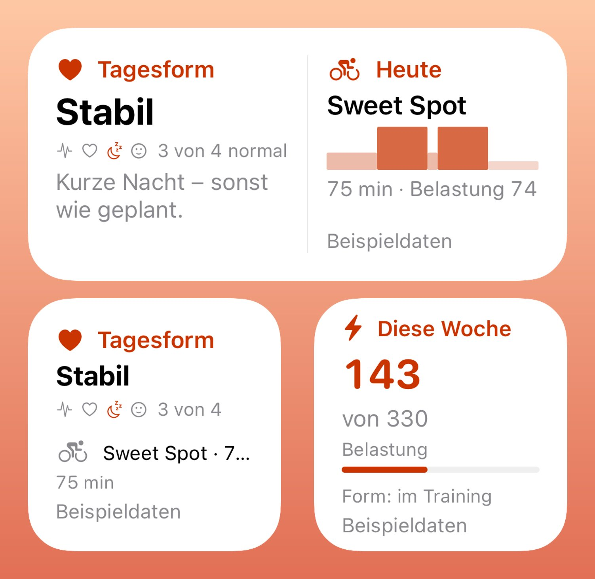
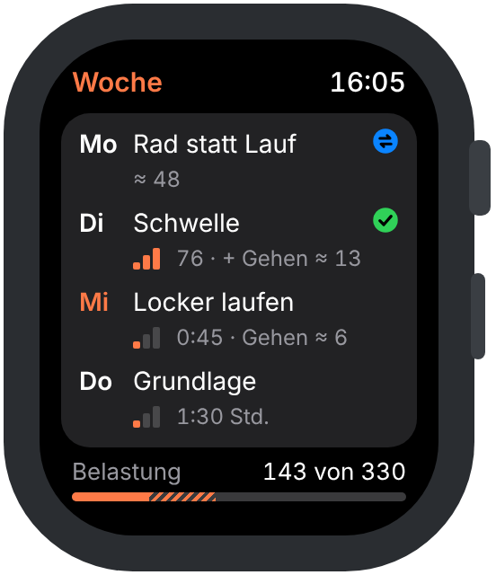
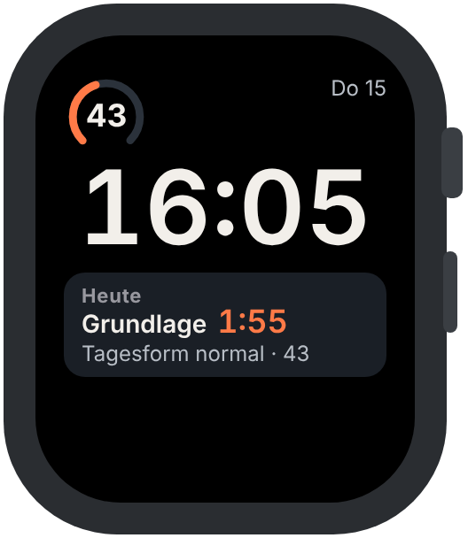
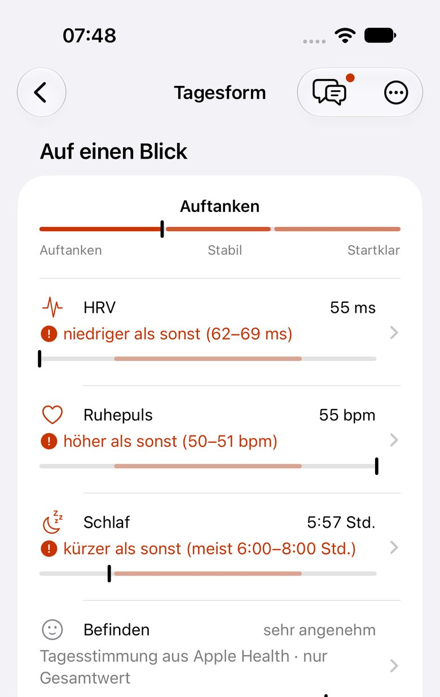

One plan from all your training. Private, within the Apple ecosystem.
Apple Watch, Wahoo, Zwift, Garmin or Apple Fitness+: whatever arrives in Apple Health, ZonePit turns into one weekly plan across all sports – matched to readiness and sleep, with the maths in the open. Your health data stays in the Health app on your iPhone, and so does the AI coach.


- No account
- No servers of our own
- No tracking
Many sources. One data base. One plan.
You train with whatever you like
Apple Health collects it all
Your data is kept secure in the Health app because it is encrypted and protected with the passcode on your iPhone. You decide in Health which data ZonePit may read – for each data type separately.
ZonePit turns it into one plan
- MoRide76
- DiRun48
- MiWalk≈ 13
- DoStrength≈ 20
- FrSwim · planned35
Every workout gets a load – calculated with your own thresholds for power, pace and heart rate. From that, ZonePit plans what you can handle next: one load, one plan instead of a plan in every app.
- Data
Workouts, sleep, HRV, resting heart rate and nutrition come from Apple Health – whichever watch, bike computer or app recorded them.
- Sport and goal
You choose your main sport and other sports with sessions per week, plus your goal – raise your threshold, build base, prepare for an event or stay fit – and your time per weekday.
- Plan
Your main sport gets the key sessions, the others complement them – never two hard days in a row. ZonePit plans the next days with build, recovery and an outlook on the weeks ahead.
- Plan and actual
When things go differently, ZonePit sees it in your workouts. On its own it only makes the week lighter – with a reason and undo. Everything else the coach suggests; you decide.
One week, one load, one coach.
Every workout in Apple Health counts toward your load. Every sport brings its own metrics, and all of them share one weekly plan.
Cycling
Power, FTP, power zones, power curve and weekly plan. Sessions go to your Apple Watch or, if you like, to Zwift via Intervals.icu – with short cues per step and, if you like, automatically whenever the plan changes.
Running
Pace and heart rate, thresholds and zones, runs in the shared plan.
Swimming
Technique, endurance and intervals by duration and effort. A first version we refine with your data.
Strength & core
Time blocks in your plan that fit around key sessions, e.g. with Apple Fitness+.
One state – on all your devices.





Log how you feel on your watch and it is on your iPhone right away – readiness, widget and watch face carry on from there. Send a session and it waits in Apple’s Workout app; after training it is ticked off in your plan.
Today on your watch
Readiness, today's session and logging how you feel – right on your Apple Watch.
Sessions in the Workout app
With phases and target ranges for power, pace or heart rate. Sending again replaces instead of duplicating.
Widgets and watch face
Readiness, session and form on Home Screen, Lock Screen and watch face. While your watch is locked, values stay hidden.
Your body has a say.

Readiness
HRV, resting heart rate and sleep against your own normal range. On a weak day the coach suggests an easier session.
Sleep
Sleep score from duration, regularity and interruptions, plus sleep debt and a bedtime recommendation.
Health metrics at a glance
Sleep, vitals and nutrition as clear tiles with history and explanation.
Fuelling around training
From your nutrition app via Apple Health. Fuelling guidance for long and hard sessions, no diet targets.
Cycle-aware coaching
For women, optional and free: readiness and plan take your cycle phase into account.
Five principles.
One plan from all your training
Whatever arrives in Apple Health becomes one load and one weekly plan across all sports – instead of a plan in every app. Each day shows plan and actual.
Every sport with its own metrics
Cycling with power, FTP and Zwift, running with pace, swimming with swim threshold, strength with perceived effort. Golf, tennis & co. go in with fixed days. Walking and workouts without a power meter count too; estimates are marked “≈”.
Open method
Every number shows what it is made of, how precise it is and where the method comes from. No black box.
AI coach powered by Apple Intelligence
The coach runs on Apple's language model on your iPhone: ask in your own words, get answers about your plan and numbers. The maths follows the open method, never the language model.
Private, on your devices
Your health values stay in the Health app. Analysis, plan and AI coach run on your device, synced only through your own iCloud: no account, no servers of our own, no tracking. In English and German.
Keep your apps. ZonePit brings them together.
Keep riding with Zwift or Wahoo, running with Garmin, training with Apple Fitness+. ZonePit stays inside the Apple ecosystem and turns everything that arrives in Apple Health into one plan – no extra account, and your health data goes only to your own devices and your own iCloud.
Your health data stays with you.
No account, no servers of our own, no analytics. Analysis, plan and coach happen on your device. On your other devices with the same Apple ID, ZonePit syncs plan, goals and settings through your private iCloud, wellbeing and notes end-to-end encrypted – readable only by your devices. Optionally you send planned sessions to Intervals.icu, workout targets only, no health data.
Privacy and technologyWith Pro, your training adapts to you.
For free you get all the analysis. Pro plans your week from all your workouts, adapts it to readiness and actual load, and sends sessions to your Apple Watch.
| Area | Free | Pro |
|---|---|---|
| Workouts | All sports with details, load and personal bests | plus history per sport and threshold suggestions |
| Form | Fitness, fatigue, form (current) | History and form forecast |
| Plan | – | Weekly plan with goal, time budget and readiness, multiple sports |
| Coach | 3 questions a week | unlimited, plan changes by conversation |
| Health | Readiness, sleep, health metrics, nutrition, cycle | Fuelling around sessions, bedtime matched to your plan |
| Send | – | Apple Watch, Intervals.icu and Zwift, automatically if you like |
Pro: €1.99 a month, €14.99 a year or €34.99 once. 14 days of every Pro feature for free, no subscription. Pricing in detail →
FAQ
Can I use ZonePit yet?
Yes. ZonePit 1.0 is in public beta on TestFlight: join the beta. The App Store launch follows; you'll find the link here.
Which sports does ZonePit support?
ZonePit plans cycling, running, swimming, and strength and core in one shared weekly plan. Any other sport from Apple Health – golf, tennis, horse riding, skiing and more – you add with its fixed days; ZonePit counts the load and plans fitting supplementary training around it. Cycling is the deepest discipline, with power, FTP and Zwift. Swimming is a first version that we refine with data from the beta. Every workout in Apple Health counts toward load and readiness, including hiking, rowing or HIIT.
Do I need an Apple Watch?
No. ZonePit reads whatever arrives in Apple Health, whether from Apple Watch, Garmin, Wahoo, Zwift or another app. A watch helps for readiness values like HRV and sleep. You can also send planned sessions to your Apple Watch.
Do I need an account?
No. There is no sign-up and no servers of our own. Your health values stay in Apple Health; ZonePit syncs plan and wellbeing only through your own iCloud, wellbeing and notes end-to-end encrypted.
How much does ZonePit cost?
The core app is free. ZonePit Pro with the weekly plan, unlimited coach and exports costs €1.99 a month, €14.99 a year or €34.99 once. From your first launch you get every Pro feature free for 14 days, no subscription.